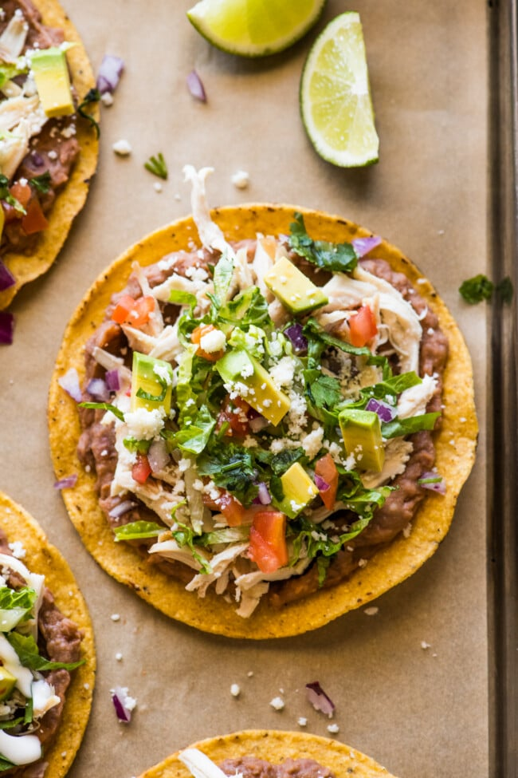

Chicken Tostadas

Classic Mexican tostadas with chicken and toppings of your choice.
Inigredients
- Tostada shells
- Shredded chicken
- Refried beans
- Toppings
- Salsa of your choice
- Queso Fresco
Steps
- Get your ingredients ready
- Spread your refried beans on the tostada shell
- Place your toppings on the tostada shell
- Add your shredded chicken
- Apply your salsa and queso fresco
- Enjoy!